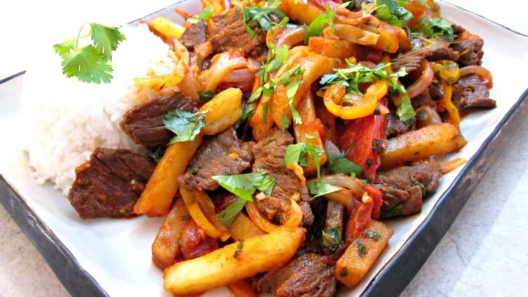

Featured Recipe - Lomo Saltado
Lomo saltado is a popular, traditional dish from Peru. It is a stir fry dish that typically combines marinated strips of sirloin steak with tomatoes, onions, french fries, and served with a side of white rice. The dish originates from the chifa tradition, the Chinese cuisine of Peru. It's popularity has made this delicious dish a part of the mainstream culture.
Ingredients Needed (Serves 4 people)
Make sure that you have all these ingredients if you want to serve the best tasting dish
(recipe from Tasty.co)
- 2 tbsp vegatable oil, divided
- 1 lb sirloin steak, cut into strips
- salt, for flavor
- black pepper, for flavor
- 1/2 red onion, sliced
- 1 medium tomato, sliced
- 2 cloves garlic, minced
- 1 tbsp aji amarillo paste
- 2 tbsp soy sauce
- 1 tbsp white vinager
- 1 tbsp fresh cilantro
- 1 lb frenceh fries, cooked and hot
- white rice, cooked, for serving (optional)
Instructions
Follow these instructions and you will have the perfect meal
- Heat 1 tbsp of oil in a large pan over high heat. Add the steak, season with salt and pepper, and cook until browned, 5-6 minutes. Remove from the pan.
- Heat the remaining tbsp of oil in the same pan, then add the red onion and cook for about 5 minutes, until softened and browned. Add the tomato, garlic, and aji amarillo paste, and cook for another 5-7 minutes, until the tomatoes have released some of their juices, but are still intact.
- Add the soy sauce and vinegar and stir to combine, let cook for 1 minute.
- Add the steak, fries, and cilantro. Toss gently to coat the fries in the sauce.
- Serve with rice, if desired
- Enjoy your cooking! Best if eaten with friends or family.